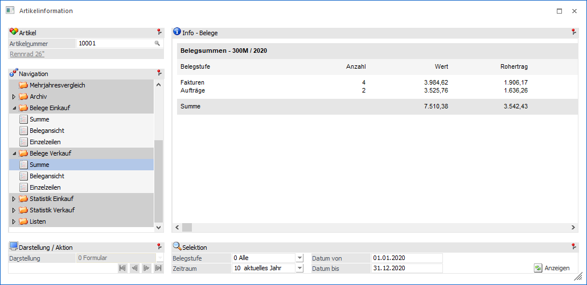
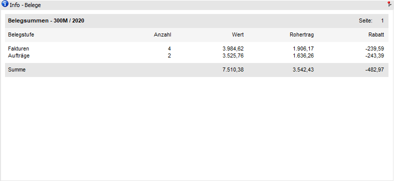
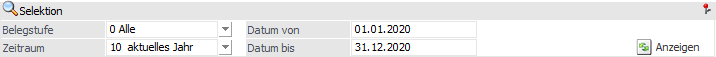
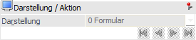

Artikelinformation - Bereich "Belege Einkauf / Belege Verkauf" - Ansicht "Summe"
In der Ansicht "Summe" wird für jede Belegstufe eine Summenzeile mit Wert, Rohertrag, Rabatt und Anzahl der Belege angezeigt.

Die Ansicht "Summe" besteht aus den folgenden Info-Elementen:
ü Info - Belege
ü Selektion
ü Darstellung / Aktion
Info - Belege

An dieser Stelle wird die Übersicht der Belege, gemäß der nachfolgenden Selektion, dargestellt.
Selektion

In diesem Bereich kann definiert werden, welche bzw. wie viele Belege dargestellt werden sollen. Die benutzerspezifische Speicherung der Einstellungen erfolgt für die Bereiche "Belege Einkauf" und "Belege Verkauf" übergreifen.
Ø Belegstufe
An dieser Stelle kann definiert werden, welche Belegstufe ausgewertet werden sollen. Folgende Möglichkeiten stehen zur Verfügung:
ü 0 - Alle
ü 1 - Fakturen
ü 2 - Lieferscheine
ü 3 - Aufträge
ü 4 - Angebot
ü 5 - Nicht gedruckte Belege
ü 6 - Autobelege
Ø Zeitraum
Aus der Auswahlliste kann der Zeitraum ausgewählt werden, der ausgewertet werden soll. Dabei stehen folgende Optionen zur Verfügung:
ü 1 - Heute
ü 2 - aktuelle Woche
ü 3 - letzte 7 Tage
ü 4 - letzte 14 Tage
ü 5 - aktueller Monat
ü 6 - 1.Quartal
ü 7 - 2.Quartal
ü 8 - 3.Quartal
ü 9 - 4.Quartal
ü 10 - aktuelles Jahr
ü 11 - Vorjahr
ü 12 - Alle
Hinweis
Aufgrund des Zeitraums werden die Felder "Datum von" und "Datum bis" gefüllt, welche aber manuell überschrieben werden können.
Ø Datum von / bis
An dieser Stelle kann der Datumsbereich, welcher ausgewertet werden soll, manuell angegeben werden. Die Aktualisierung der Anzeige wird mit Hilfe des Buttons "Anzeigen" gestartet.
Ø Anzeigen
Durch Anwahl des Buttons "Anzeigen" wird die Belegauswertung aufgrund der getroffenen Einstellungen angezeigt.
Darstellung / Aktion

Ø  VCR-Buttons
VCR-Buttons
Sollte die Anzeige über mehrere Seiten dargestellt werden, dann kann mit Hilfe der VCR-Buttons zwischen den einzelnen Seiten gewechselt werden.